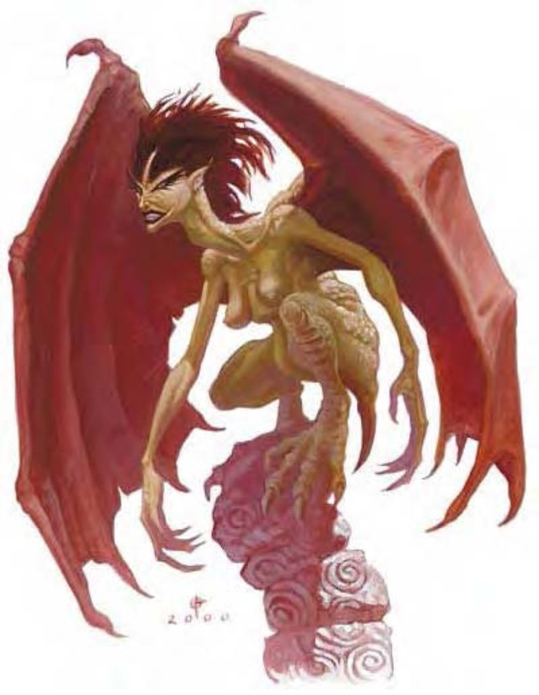

这种生物看起来像是有邪恶脸孔的老人，却有着爬行怪物的弯曲身体、腿与翅翼。他的头发污秽纠结，沾有血块。
很难想象有什么生物会比鸟妖更邪恶可怕，残忍的鸟妖持续地物色新猎物，以高亢的歌声造成痛苦与死亡。
他们煤炭般漆黑的眼晴、锐利的爪子与多结的指头，全都反映出鸟妖灵魂的邪恶。这种邪恶生物赤身裸体，常用巨大的骨头作为木棒使用。
鸟妖喜欢以魔法吟唱诱惑孤单的旅行者，再使他们受到极大的痛苦。等鸟妖觉得玩腻了这个新“玩具”，才会停止虐待而杀掉或吃掉他们。
战斗战斗时鸟妖偏好使用空袭并以近战武器攻击敌人。
迷惑吟唱 (超自然)：歌声是鸟妖最阴狠的武器。当鸟妖吟唱时，300英尺扩散范围内的所有生物 (鸟妖除外) 必须通过意志检定 (DC=16)，否则陷入迷惑状态。迷惑吟唱属于音波、影响心灵的魅惑效果。通过检定的生物24小时内不会再被同一只鸟妖的吟唱影响，豁免检定DC的调整值与魅力调整值相同。
受影响的生物将以最直接的路径走向鸟妖。若路经危险区域 (通过火焰、悬崖等) 则该生物可再做一次豁免检定。除了保护自己外，受影响的生物什么都不能做。（因此受影响的战士不能逃跑也不能攻击，但不受防御式战斗的减值。）距离鸟妖5英尺以内的生物将站在原处不动，也不抵抗鸟妖的任何攻击。此效果只要鸟妖持续吟唱即可继续，若停止歌唱则可维持到下一轮。吟游诗人的破咒曲可以让受影响的生物再做一次意志检定。
技能：鸟妖在进行“唬骗”与“聆听”检定时具有+4种族加值。
鸟妖射手是残酷的猎人、四处流窜的土匪，他们专精于远程战斗。鸟妖射手常受雇为佣兵，为任何出最高价的人提供战力。没被雇用的时候他们会当起拦路强盗，胁迫商队缴交保护费。
战斗 (鸟妖射手)：
迷惑吟唱 (超自然)：通过意志检定 (DC=17) 则无效。
持有物：“+3镶嵌皮甲”、“+1寒冰复合长弓” (+1力量加值)、10支寒铁箭、10支银箭、5支“+2箭”、次级神射护腕、治疗中度伤药水、轻灵药水、“+2抗力斗篷”、“+1防护戒指”。(不同的鸟妖射手其装备也不尽相同。)
| 资料栏位 | 鸟妖 | 鸟妖射手、7级战士 |
|---|---|---|
| 生命骰 | 7d8 (31HP) | 7d8+7d10+28 (103HP) |
| 先攻 | +2 | +9 |
| 速度 | 20英尺 (4格)、飞行80英尺 (普通) | 20英尺 (4格)、飞行80英尺 (普通) |
| 防御等级 | 13 (+2敏捷、+1天生)、接触12、措手不及11 | 23 (+5敏捷、+1天生、+6 “+3镶嵌皮甲与+1防护戒指”)、接触16、措手不及18 |
| 基本攻击/擒抱 | +7 / +7 | +14 / +15 |
| 攻击 | 木棒+7近战 (1d6) | “+1寒冰复合长弓” (+1力量加值) +22远程 (1d8+4 / 19-20 / ×3附加1d6寒冷)；或爪抓+15近战 (1d3+1) |
| 全力攻击 | 木棒+7 / +2近战 (1d6) 及2爪抓+2近战 (1d3) | “+1寒冰复合长弓” (+1力量加值) +22 / +17 / +12远程 (1d8+4 / 19-20 / ×3附加1d6寒冷)；或2爪抓+15近战 (1d3+1) |
| 占据/触及 | 5英尺 / 5英尺 | 5英尺 / 5英尺 |
| 特殊攻击 | 迷惑吟唱 | 迷惑吟唱 |
| 特殊能力 | 黑暗视觉60英尺 | 黑暗视觉60英尺 |
| 豁免 | 强韧+2、反射+7、意志+6 | 强韧+11、反射+14、意志+11 |
| 属性 | 力量10、敏捷15、体质10、智力7、感知12、魅力17 | 力量12、敏捷20、体质14、智力6、感知11、魅力19 |
| 技能 | 唬骗+11、威吓+7、聆听+7、表演 (演说)+5、侦察+3 | 唬骗+11、威吓+9、聆听+7、表演 (演说)+10、侦察+5 |
| 专长 | 闪避、空袭、游说专家 | 警觉、精通致命攻击 (复合长弓)、精通先攻、钢铁意志、多箭齐发、近程射击、快速射击、专攻武器 (复合长弓)、武器专精 (复合长弓) |
| 环境 | 温带沼泽 | 温带沼泽 |
| 组织 | 单独、成双或飞行群 (7-12) | 单独 |
| 挑战级数 | 4 | 11 |
| 宝藏 | 标准 | 标准 (包含装备) |
| 阵营 | 通常混乱邪恶 | 通常混乱邪恶 |
| 进化 | 视人物职业而定 | 视人物职业而定 |
| 等级修正值 | +3 | +3 |